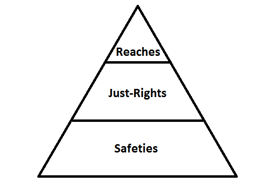
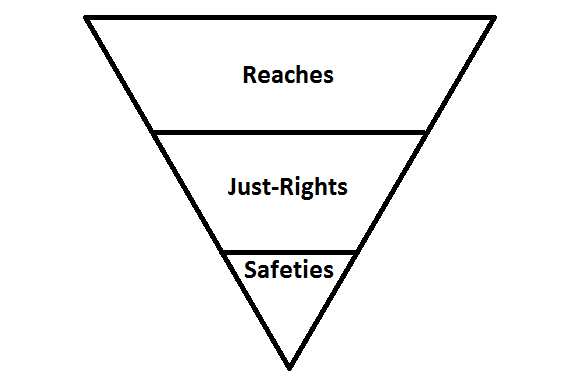
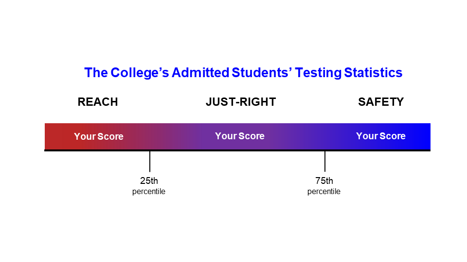
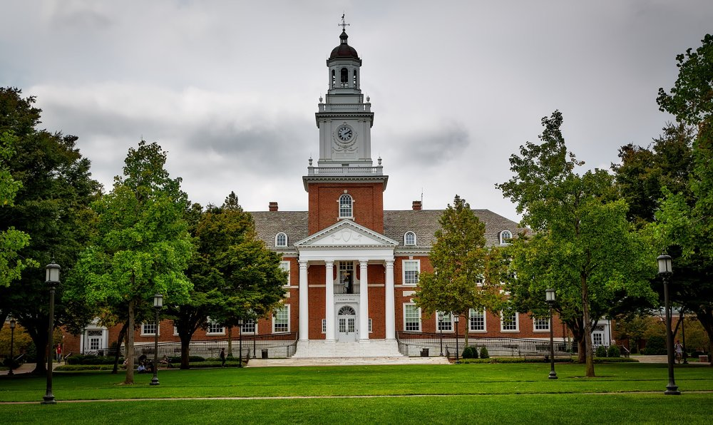
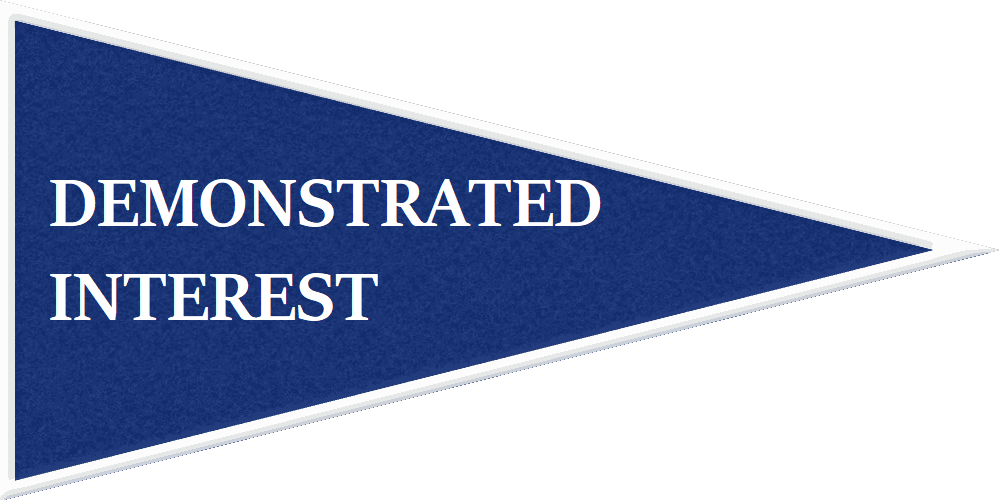
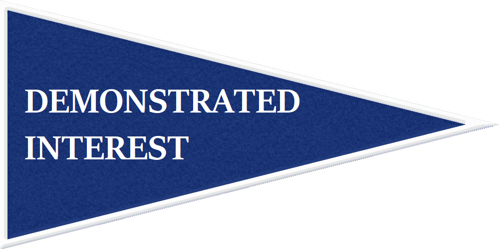

Constructing Your College List
Carefully selecting your college list is important. This is intuitive, but I can’t tell you how many times students will say that they don’t want to go to a school they got into because it’s too urban, big, hot, etc.
Every school you apply to you need to be at least okay with attending. If you aren’t, then that school isn’t even useful as a safety.
You also need to be realistic with your choices. Capitalizing on all of these intangibles still probably won’t get you accepted if your standardized test scores or grades aren’t in the range of students who are accepted. Be optimistic but not unrealistic (if you are an ‘unhooked’ applicant you should aim to be in the top 25% or above average stat wise- grades and test scores).
I can’t talk about all the schools you will be looking at. I will recommend what I think is the most comprehensive guide to explaining all the different colleges. It is invaluable to be able to simply flip to a page and learn more than enough about that college.
Knowing What You Want
Before I delve into the process of applying to colleges and maximizing chances, I'll discuss what choosing your colleges is all about.
Think of the college process like a job interview; you need to show not only that you are smart, but hard working, a team player, a leader, etc. This comparison can extend further to explain the dynamic between you as an applicant and the college. Much like you scope out a job in a job interview, so too do you scope out colleges during the application process. The process is as much you selecting them as it is them selecting you.
Everyone's financial situation, academic interests, and goals are different. Colleges have different cultures with the body of attending students often being similar in certain ways- value systems, attitudes, etc.
For a smart student in a tough financial situation, a state school's honors program might be a much better choice for them. Someone who loves to attend school sporting events might shy away from smaller schools and gravitate towards large D1 colleges.
There are so many factors that go into choosing the colleges that are right for you and only you know how to weigh them accordingly.
All that being said, once you do figure out your list, take into consideration some of the following strategies. Realize, though, that they aren't for everyone and can be adapted; use the ideas behind them in the context of your college list and plans.
The ‘System’ To Your List
The college application structure of ‘safeties, just-rights, reaches’ of years past tended to be a lot of safeties, some just-rights, and one or two reaches. It resembled something like this:
This idea is now antiquated and is essentially flipped:
A lot of reaches are applied to, and only one or two safeties. This change is primarily due to the ease at which applying to college can now be done through the common app and the increased selectivity of colleges. The increased selectivity means colleges are forced to choose among the 'academically qualified' applicants; it also makes top schools a reach for everyone, even those beyond outstanding. Applying to schools is much easier now than it was in years past and this makes top students applying to 15 colleges not out of the norm. This only makes the schools more selective in accepting applicants. It also explains the rising importance of demonstrated interest for colleges (see ‘Demonstrated Interest’).
The subjectivity of the college process due to the weighing of all these intangibles makes the admissions more ‘arbitrary,' so applying to more schools, particularly more 'reaches' and 'just-rights', is crucial to maximize your chances.
Your Schools
When you decide what schools to apply to be realistic but optimistic. If your grades and test scores aren't at all close to the average of the school and you are not a recruited athlete, applying there is a mistake; you can use that time to apply to a school where you have a reasonable chance at acceptance. It is important that you use your guidance counselor and look at the grades and testing statistics of schools before you construct your list.
A quick, somewhat reliable way to estimate whether a school is a safety, just-right, or reach is seeing where your test score lies on their 25th -75th percentiles for admitted students:

This assumes your grades correlate with your test score. Also, Ivies and Ivy-caliber schools are reaches for everyone even if your score is above the 75th percentile.
Understand that some of the statistics are brought down by recruited athletes or other special applicants. Be realistic with your choices, but still aim high.
School History
Another factor that is actually very influential for your chances is past acceptances from the college for your high school and thus the relationship that the college has with your high school.Your high school's history of acceptances can give you a massive advantage or put you at a disadvantage.
To start to explain this I will give an example of something that occurs at my high school. Cornell University has taken around two students from my high school every year for a while now. With my class it was no different, with Cornell choosing to take two Early Decision admits out of a pool of six applicants. Why does Cornell do this?
Cornell knows my high school very well and, so, they don’t have to do research on my school’s profile and uncommon 7 point GPA weighting system when they look at applicants from my school. Past applicants from my high school have done very well at Cornell and, so, Cornell can feel secure that my high school produces students who can handle Cornell’s academics fairly well. So because of all this, Cornell makes it easy on themselves and generally takes about two kids from my public school each year. One year nobody from my school applied to Cornell and the Cornell admissions officer called my school to question why nobody applied. Cornell is a very selective school; this is a great example of school history making it easier for applicants to a particular college to get in.
This is, of course, an anecdotal example and much of this for you will have to be observation-based, but this trend can be seen throughout. My school never sends anyone to Harvard despite having sent multiple students to Princeton, Columbia, Yale, and Stanford. My high school is not on Harvard’s radar at all, and they don’t feel like learning about it. You see this with many high schools who will send students every year to a particular highly selective school but have no students ever get into a particular less selective school. This doesn't just apply to the selective schools, though, as often state schools or others not always as selective will still be more inclined to accept students from a particular high school.
I strongly recommend you do research on your high school either by checking Naviance data or information from your guidance counselor. It can be either a lot harder or a lot easier to get into a school based on how past applicants from your school have fared. Sometimes how accepted students have done at the school can play a small part too.
That being said, it would be a great thing for your school for you to pave the way for future applicants to get into a college by you, yourself, being accepted and succeeding despite the school’s history!
Location
Although I hate to talk about something out of your control, location is relevant in that you can be at an advantage or disadvantage applying to certain schools based on your location.
The obvious advantage lies in applying to schools that offer cheaper tuition to in-state residents and being an out-of-state resident meaning the college will get more money from you. The basic premise, though, of capitalizing on location is applying to schools that people from your location don’t often apply to. So a great example is applying to the UC’s from my public school in PA. UC Berkeley is widely considered a very selective school but if you look at my school's acceptance data you see students with lower stats being accepted. This is because so few applicants come from PA, and PA applicants are paying such expensive tuition.
This premise applies throughout. Applying to a small Pennsylvania school from California is going to give you an advantage in acceptance, as will applying to Duke from Montana, etc.
I must stress, though, that this location factor really should not be taken too heavily; it is merely situationally advantageous but not something to base your college decisions off of especially if it means reluctantly going far away from home.
 
